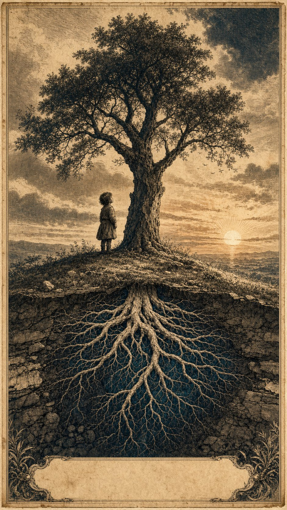

Ruimte voor het oergevoel
Een manifest voor het behoud van menselijke verbinding in een tijd van versnellende techniek
Jacobus van Merksteijn · Malta, juni 2026
Aanleiding
Er is iets wat in de mens aanwezig is voordat hij kan spreken, voordat hij kan lezen, voordat hij benoemt wat hij voelt. Het is geen mystiek en geen techniek. Het is een directe, lichamelijke vorm van verstaan — een afstemming tussen mensen die plaatsvindt voordat woorden of beelden bemiddelen. Ik noem het hier het oergevoel. Andere tradities spreken van resonantie, van afstemming, van co-regulatie. De naam doet er minder toe dan het feit.
Dit vermogen verdwijnt niet vanzelf. Het wordt onbewust afgeleerd, vanaf de eerste levensjaren, door een opvoedings- en scholingssysteem dat onverdeeld is gericht op het meetbare, het talige en het cognitieve. Wat niet in een toets past, wordt onzichtbaar gemaakt. Wat onzichtbaar wordt gemaakt, sterft uit.
Dit manifest stelt dat het behoud van het oergevoel geen pedagogische luxe is, maar een beschavingsvoorwaarde. In een eeuw waarin kunstmatige intelligentie, automatisering en gemedieerde communicatie het cognitieve werk grotendeels zullen overnemen, wordt juist datgene wat machines principieel niet kunnen — directe menselijke aanwezigheid, niet-talige attunement, ethisch oordeel uit ervaring, het dragen van het ongezegde in een gemeenschap — de bepalende factor voor of een samenleving leefbaar blijft.
Diagnose
Wat verloren gaat
De neurowetenschapper Iain McGilchrist heeft in twee omvangrijke werken laten zien dat de westerse cultuur sinds de Verlichting een toenemende dominantie vertoont van een nauwe, analytisch-fragmenterende manier van aandacht — ten koste van een bredere, relationeel-integrerende manier van waarnemen die de context, het impliciete en de samenhang ziet.1 Hij noemt het de meta-crisis: een opeenstapeling van milieu-, zin- en gezondheidscrises die alle teruggaan op één onderliggende verschuiving — wij hebben de wereld leren manipuleren maar zijn vergeten haar te begrijpen.
Stephen Porges heeft met de polyvagaaltheorie aangetoond dat het menselijk zenuwstelsel zich ontwikkelt door co-regulatie — door rustige, veilige afstemming met andere zenuwstelsels, in directe lichamelijke nabijheid. Dit is geen sentimenteel idee maar een neurofysiologisch feit: zonder die afstemming raakt het systeem permanent op overleven afgesteld.2 Een kind dat van jongs af aan vooral met schermen, prikkels en prestatiebeoordeling wordt geconfronteerd, mist het substraat waarop alle latere empathie, samenwerking en moreel oordeel rusten.
Hoe het verdwijnt
Het verlies begint niet met opzet. Het begint met de structuur van het systeem zelf:
- vroege formele alfabetisering die het symbolische voorrang geeft op het zintuiglijke;
- voortdurende beoordeling die kinderen leert naar buiten te kijken voor bevestiging in plaats van naar binnen;
- schermtijd die directe lichamelijke aanwezigheid vervangt door gemedieerde prikkels;
- een curriculum dat het meetbare beloont en daardoor automatisch het niet-meetbare devalueert;
- lerarenopleidingen die didactische techniek onderwijzen maar zelden de kunst van de aanwezigheid zelf.
Geen van deze elementen is op zichzelf kwaadaardig. Samen vormen zij een filter dat één bepaald type mens cultiveert — gericht, productief, talig, beheersbaar — en een ander type mens, dat de samenleving juist nu het hardst nodig heeft, langzaam laat uitsterven.
Waarom dit nu telt
Jonathan Haidt heeft in The Anxious Generation gedocumenteerd hoe sinds 2010 de mentale gezondheid van jongeren wereldwijd is ingestort, in directe correlatie met de op smartphones gebaseerde jeugd.3 McGilchrist citeert het cijfer dat 85% van de jongeren het leven als zinloos ervaart. Dit zijn geen losse symptomen. Het zijn de meetbare gevolgen van een cultuur die het niet-meetbare heeft opgegeven.
Tegelijk staan wij aan het begin van een technologische omwenteling waarin systemen zoals deze — taalmodellen, autonome agenten, robotica — in toenemende mate het cognitieve, talige en analytische werk overnemen dat de school decennialang heeft beloond. Wat de school leerde optimaliseren, optimaliseert de machine binnenkort beter. Wat overblijft als specifiek menselijke bijdrage, is precies wat de school is opgehouden te cultiveren.
Het manifest
Ik stel het volgende voor — niet als pedagogisch experiment maar als beschavingsopdracht:
1. Erken het oergevoel als competentie.
Het vermogen tot directe, niet-talige afstemming met andere mensen, met dieren, met de natuurlijke omgeving is geen restant uit een prehistorisch verleden. Het is een hoogwaardige menselijke vaardigheid die actief beschermd, ontwikkeld en gewaardeerd moet worden — naast en gelijkwaardig aan lezen, rekenen en redeneren.
2. Stel formele alfabetisering uit.
De eerste zes à zeven levensjaren behoren toe aan het lichaam, de zintuigen, de relatie en het spel. Finland — dat zijn kinderen pas op zevenjarige leeftijd formeel leert lezen — toont aan dat dit niet ten koste gaat van cognitieve uitkomsten, integendeel.4 Wat verworven wordt in de jaren ervoor is geen verloren tijd maar het fundament waarop alle latere leren rust.
3. Geef ongestructureerde tijd in de natuur de status van kerncurriculum.
Bos, water, weer, dieren en stilte zijn geen excursiedoelen maar leeromgevingen. Onderzoek naar natuurgebaseerd vroegonderwijs laat consistent betere uitkomsten zien op sociaal gedrag, taalontwikkeling en respect voor de leefomgeving.5 Maak dit standaard, niet uitzondering.
4. Bescherm stilte, verveling en eigen tempo.
Een kind dat zich nooit verveelt, leert nooit naar binnen luisteren. Een dag zonder voortdurende prikkel, evaluatie of programma is geen lege dag — het is de voorwaarde voor het ontstaan van een eigen binnenwereld. Permanente stimulering produceert mensen die alleen kunnen functioneren met externe input. Dat is geen vrijheid.
5. Stel schermen en gemedieerde communicatie uit.
Tot het zenuwstelsel zijn basis van directe resonantie heeft kunnen vormen — globaal tot ongeveer het twaalfde levensjaar — heeft een kind directe lichamelijke aanwezigheid van andere mensen nodig, niet de gladde simulatie ervan op een scherm. Dit is geen cultuurpessimisme. Het is wat de polyvagaaltheorie en het onderzoek van Haidt empirisch ondersteunen.
6. Leid leraren op in aanwezigheid, niet alleen in didactiek.
Het vermogen van een volwassene om zich af te stemmen op een kind zonder eigen agenda is zelf een vaardigheid die onderwezen kan worden. Gerald Hüther en de beweging Schule im Aufbruch tonen dat dit praktisch werkbaar is en betere uitkomsten geeft op vrijwel elke meetbare dimensie — én op de niet-meetbare die er uiteindelijk toe doen.6
7. Heroriënteer beoordeling.
Wat wij meten, wordt wat wij belonen, en wat wij belonen wordt wat wij worden. Zolang het beoordelingssysteem alleen het meetbare registreert, blijft het niet-meetbare onzichtbaar en daarmee waardeloos. Een beschaving die haar toekomst serieus neemt, ontwikkelt manieren om relationele, ethische en intuïtieve competenties zichtbaar te maken zonder ze te reduceren tot een cijfer.
8. Bescherm de mensen die het oergevoel hebben behouden.
Zij zijn geen achterblijvers. Zij zijn de mensen die in een tijd van versnellende techniek de menselijke schaal vasthouden. Onderwijs, werk en bestuur moeten ruimte maken voor hun manier van waarnemen en bijdragen, in plaats van hen te dwingen zich aan te passen aan een systeem dat hun specifieke kwaliteit niet kan zien.
Slot
Wat in dit manifest staat is niet nieuw. Het is in vele tradities, in vele talen, in vele eeuwen al gezegd. Wat nieuw is, is de urgentie. Wij staan op een drempel waar de technische beheersing van de wereld een omvang krijgt die geen enkele eerdere generatie zich heeft kunnen voorstellen — terwijl de innerlijke kant van de mens, die deze techniek moet dragen, sneller verschrompelt dan in enige eerdere generatie.
Het is niet de techniek die ons zal redden. Het is niet eens de techniek die het probleem is. Het probleem is dat wij de mensen die de techniek in dienst van het leven kunnen houden, vanaf hun geboorte systematisch laten uitdoven.
Ruimte maken voor het oergevoel is daarom geen romantische oproep. Het is een nuchtere, strategische beslissing over wie wij willen zijn aan de andere kant van deze eeuw. De mensen die deze verbinding nog dragen, zijn niet onze erfgenamen van vroeger. Zij zijn de bouwers van wat komt.
Jacobus van Merksteijn
Malta, juni 2026
openvizier.org · novademocratia.com
Jacobus van Merksteijn
Malta, juni 2026
- Iain McGilchrist, *The Master and His Emissary* (2009) en *The Matter With Things* (2021). Zie ook het interview: https://thebeautifultruth.org/life/psychology/iain-mcgilchrist-brains-hemispheres/.
- Stephen W. Porges, Polyvagal Theory --- co-regulatie als biologische basis van veiligheid en sociale verbinding. Polyvagal Institute: https://www.polyvagalinstitute.org/whatispolyvagaltheory. Zie ook Polyvagal Theory: A Science of Safety, Frontiers in Integrative Neuroscience (2022): https://www.frontiersin.org/journals/integrative-neuroscience/articles/10.3389/fnint.2022.871227/full.
- Jonathan Haidt, *The Anxious Generation* (2024). Beweging en bronnen: https://www.anxiousgeneration.com. Zie ook *End the Phone-Based Childhood Now*, The Atlantic: https://www.theatlantic.com/technology/archive/2024/03/teen-childhood-smartphone-use-mental-health-effects/677722/.
- Timothy D. Walker, *The Joyful, Illiterate Kindergartners of Finland*: https://taughtbyfinland.com/the-joyful-illiterate-kindergartners-of-finland/. Finse kinderen beginnen pas op zevenjarige leeftijd met formeel leesonderwijs en behoren toch tot de wereldtop op latere leeftijd.
- *Nature-Based Early Childhood Education and Children\'s Outcomes*, Int. J. Environ. Res. Public Health (2022): https://pmc.ncbi.nlm.nih.gov/articles/PMC9142068/. Zie ook NAEYC, *Take It Outside: A History of Nature-Based Education*: https://www.naeyc.org/resources/pubs/yc/fall2021/take-it-outside.
- Gerald Hüther, Akademie für Potentialentfaltung: https://www.gerald-huether.de/akademie-fuer-potentialentfaltung/. Zie ook het initiatief Schule im Aufbruch: https://schule-im-aufbruch.de/schule-im-aufbruch/ansatz/.